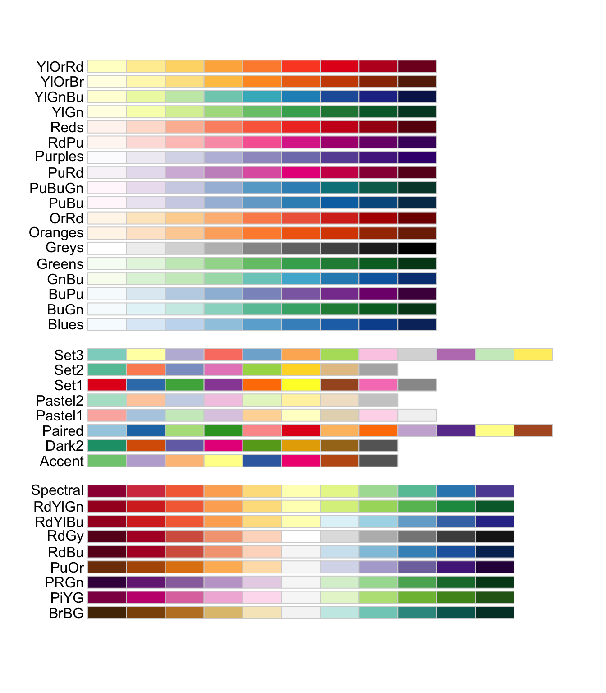
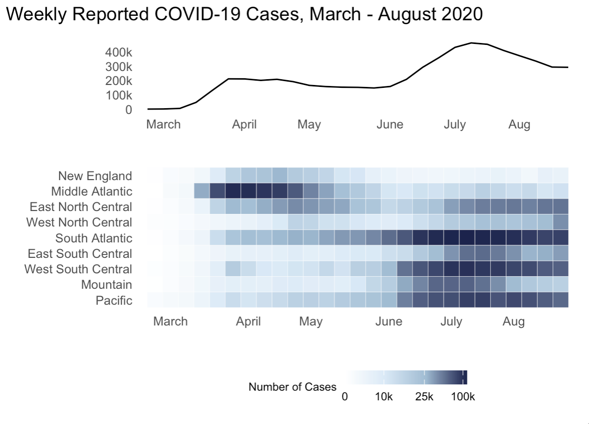

library(tidyverse)
library(HDSinRdata)
library(patchwork)
data(pain)
# sampling data
set.seed(5)
pain_df_sub <- subset(pain,
select = -c(PAIN_INTENSITY_AVERAGE.FOLLOW_UP))
pain_df <- pain[complete.cases(pain_df_sub), ]
pain_df <- pain_df[sample(1:nrow(pain_df), 5000, replace = FALSE),] 8 Visualization with ggplot2
The package ggplot2 (Wickham 2016) is another useful package in the tidyverse that allows statisticians to use visualizations to communicate key findings and results in a compelling format. In this chapter, we learn about the three main components in a ggplot object and then expand on that format by learning more about the different layers we can use to create various plots. As with the dplyr functions, there are many functions to cover, and they build upon one another.
The three packages we use in this chapter are tidyverse, HDSinRdata, and patchwork (Pedersen 2022), the last of which is a nice package for combining multiple plots together into a single figure. We use the data from the Pittsburgh pain clinic (Alter et al. 2021) introduced in Chapter 3 to create our visuals. You can refresh your memory about this data by reading the data documentation. For the purposes of this chapter, we take a sample of 5,000 patients that are complete cases at baseline to reduce the computation time to display each plot. You can ignore how the code used to find this sample works.
8.1 Intro to ggplot
We’ll begin by demonstrating how to create a scatter plot in ggplot2 to introduce the three key elements of a ggplot2 object. Specifically, we create a scatter plot of a patient’s depression vs. anxiety score. To start a graph, we can use the ggplot() function to create a ggplot object as shown in the following code. Note that this brings up a gray box - this is the base that we build up from.
ggplot()
Next, we can begin adding layers to our ggplot object. One type of layer is a geom, which creates a geometric object. In the next code chunk, we use the geom_point() function to add a scatter plot layer. For this function, we first need to specify which data we want to use, and then we need to tell R how to use that data to create the scatter plot using the aes() function, which creates an aesthetic. For a scatter plot, we need to at least specify the x-axis and y-axis in the aesthetic. Both the data and the aesthetic can either be specified in our initial ggplot() function, which passes this information to all future layers, or in the geom_point() function itself. In the following code, we specify the aesthetic in the geom function but also include two alternative ways to code the same image in the subsequent code chunk. The resulting plot shows a fairly linear relationship between anxiety and depression.
ggplot(pain_df) + geom_point(aes(x=PROMIS_ANXIETY,
y = PROMIS_DEPRESSION))# Alternative 1:
ggplot(pain_df, aes(x = PROMIS_ANXIETY, y = PROMIS_DEPRESSION)) +
geom_point()
# Alternative 2:
ggplot() +
geom_point(data = pain_df, aes(x = PROMIS_ANXIETY,
y = PROMIS_DEPRESSION))If we want to improve our plot, we may want to add different labels and a title. To do so, we use the labs() function to add a layer in which we can specify all labels. Additionally, I have passed more information to the geometry layer by changing the color, size, and shape of the points. These things are specified outside of the aes() function since they do not come from the data - every point has the same color, size, and shape in this example.
ggplot(pain_df)+
geom_point(aes(x = PROMIS_ANXIETY, y = PROMIS_DEPRESSION),
color = "blue", size = 2, shape = 5) +
labs(x = "PROMIS Anxiety Score", y = "PROMIS Depression Score",
title = "Depression vs Anxiety Scores")Let’s create another example. This time, I create a histogram for initial recorded pain level. To find the corresponding geom for the type of plot we’d like to make, we can use the data visualization cheat sheet from Posit. The first page lists all the geom options available along with what aesthetics we can set for each option. For example, here we are interested in plotting the distribution of one continuous variable, and under the geom_histogram() function we can see that we can specify x (the variable whose distribution we want to plot) as well as binwidth, y, alpha, color, fill, linetype, size, and weight. By default, the y value in a histogram is the count for each bin.
In the following code, you can see that we updated the color (color), fill (fill), and opacity (alpha) of our histogram bars and updated the number of bins to be 11 (to account for the possible values 0-10). Additionally, we used the theme_minimal() function to change the background colors used. You can find the available themes on the second page of the cheat sheet. Try changing the theme of the following plot to theme_bw().
ggplot(pain_df)+
geom_histogram(aes(x = PAIN_INTENSITY_AVERAGE), color = "violetred",
fill = "lightblue", alpha = 0.5, bins = 11) +
labs(x = "Patient Reported Pain Intensity", y = "Count")+
theme_minimal()8.1.1 Practice Question
Recreate Figure 8.1.
# Insert your solution here: 8.2 Adjusting the Axes and Aesthetics
We can further control how each aesthetic element is displayed using scale functions. For example, suppose that I want to update the previous plot. In particular, I first want to update the x-axis to display all of the values 0 to 10 instead of 0, 2.5, 5, etc.. To update the x-axis, I need to find the corresponding scale function for x with continuous values. This function is scale_x_continuous(), which allows me to specify limits (limits), breaks (breaks), and labels (labels). The scale functions can be found on the second sheet of the cheat sheet. In this case, I just want to update the breaks to be all integer values from 0 to 10.
ggplot(pain_df)+
geom_histogram(aes(x = PAIN_INTENSITY_AVERAGE), color = "violetred",
fill = "lightblue", alpha = 0.5, bins = 11) +
labs(x = "Patient Reported Pain Intensity", y = "Count")+
scale_x_continuous(breaks = 0:10)+
theme_minimal()Now, let’s take a more complex example. The following plot shows each patient’s reported sleep disturbance vs. physical function and colors each point by their reported pain intensity. Since some points might overlap in values, we added position="jitter" to the geom_point() function to jitter the points, which corresponds to adding some random noise to each point’s position. As presented, this plot is difficult to interpret. For example, the color of pain intensity makes it hard to see how pain changes, and the legend title needs to be simpler.
ggplot(pain_df)+
geom_point(aes(x = PROMIS_PHYSICAL_FUNCTION,
y = PROMIS_SLEEP_DISTURB_V1_0,
color = PAIN_INTENSITY_AVERAGE), position="jitter")Suppose that we wanted to visualize the pain intensity and sleep disturbance for patients with below-average physical function. Note that both sleep disturbance and physical function are reported as T-Scores, meaning that the raw scores have been converted to a standardized score with mean 50 and standard deviation 10 within the population. We can use the scale functions to update our axes and labels to reflect this information. As before, we need to use the scale_x_continuous() function to update the x-axis for a continuous variable. In this case, we update the limits (to restrict to below-average physical function), breaks, and labels. We similarly update the y-axis.
Lastly, suppose we want to update the color aesthetic. As before, this aesthetic corresponds to a continuous variable. The cheat sheet provides several possible scale functions depending on how we want to specify the color gradient. We choose the scale_color_gradient() function since this allows us to specify the low and high end colors. We can also specify the breaks for the legend values similar to how we specified the breaks for the x and y axes. The argument name also allows us to rename this legend. The palette then converts this to a continuous color gradient. Note that in contrast to the scale_color_gradient() function that we chose to use for this example, the functions scale_color_gradient2() and scale_color_gradientn() allow you to specify more color points in the gradient rather than just the two extreme colors.
We can observe that decreased physical function is associated with higher sleep disturbance and that those with worse physical function and worse sleep disturbance tend to have higher reported pain. Note that this time we receive a warning message, which is because our axis limits have cut off some points. To avoid this message, we could use the function coord_cartesian() to specify our limits which clips the values rather than removing points outside the limits.
ggplot(pain_df)+
geom_point(aes(x = PROMIS_PHYSICAL_FUNCTION,
y = PROMIS_SLEEP_DISTURB_V1_0,
color = PAIN_INTENSITY_AVERAGE),
position = "jitter", alpha = 0.5) +
scale_x_continuous(limits = c(15,50), breaks = c(20, 30, 40, 50),
labels = c("-3 SD", "-2 SD", "-1 SD",
"Pop Mean")) +
scale_y_continuous(breaks = c(40, 50, 60, 70, 80),
labels = c("-1 SD", "Pop Mean", "+1 SD", "+2 SD",
"+3 SD")) +
scale_color_gradient(breaks = seq(0,10,2), low = "green",
high = "red", "Reported Pain") +
labs(x = "PROMIS Physical Function T-Score",
y = "PROMIS Sleep Disturbance T-Score") +
theme_minimal()
#> Warning: Removed 121 rows containing missing values or values outside the scale
#> range (`geom_point()`).We now demonstrate these scale functions for discrete variables. In the subsequent example, we first create a new race variable that has only three categories since other groups have limited observations. We then create a box plot for pain intensity by race. There are two discrete aesthetics here: color and the y-axis. This plot shows a higher median pain for black patients compared to other races.
pain_df$PAT_RACE_CAT <- ifelse(pain_df$PAT_RACE %in% c("BLACK",
"WHITE"),
pain_df$PAT_RACE, "OTHER")
pain_df$PAT_RACE_CAT <- as.factor(pain_df$PAT_RACE_CAT)ggplot(pain_df)+
geom_boxplot(aes(y = PAT_RACE_CAT, x = PAIN_INTENSITY_AVERAGE,
fill = PAT_RACE_CAT), alpha = 0.5) +
theme_minimal()The function scale_y_discrete() is the scale function that corresponds to a discrete y-axis. In this case, we want to update the order and labels of this y-axis. To update the order, we can either refactor the variable using factor() prior to plotting or update the limits argument of the scale function. The function scale_fill_brewer() is a scale function to control the color palette of a discrete variable used for the fill aesthetic. We use this function to specify the color palette (palette) and to specify that we do not want a legend (guide). Since we do not have a legend, we do not update the values and labels in this function.
ggplot(pain_df)+
geom_boxplot(aes(y = PAT_RACE_CAT, x = PAIN_INTENSITY_AVERAGE,
fill = PAT_RACE_CAT), alpha = 0.5) +
scale_x_continuous(breaks = c(0:10)) +
scale_y_discrete(limits = c("OTHER", "WHITE", "BLACK"),
labels = c("Other", "White", "Black")) +
scale_fill_brewer(palette = "Dark2", guide = "none") +
labs(x = "Reported Pain Intensity", y = "Reported Race") +
theme_minimal()The RColorBrewer package (Neuwirth 2022) contains several default palettes to choose from, shown in the following output. You can also create your own palette using the brewer.pal() function from this package. To visualize a palette you can use the available online tool.
library(RColorBrewer)
display.brewer.all()
Here is one more example of how you can use the scale functions - take a look at the next plot example. We used two geom_histogram() calls, or layers, to plot a histogram of pain at baseline and at follow-up. This allows us to visualize that pain at follow-up tends to be lower than at baseline.
We also specify the fill to be by “Baseline” and “Follow-up” within the aesthetic, even though this isn’t a column in the data: this is a sort of manual way to color the bars. We use the scale_fill_manual() function to then specify the colors we want to use for these two categories using the values argument. We received three warnings when creating this plot! This is because we have many NA values for follow-up and because we did not specify the bin size for either histogram. C’est la vie.
ggplot(pain_df)+
geom_histogram(aes(x = PAIN_INTENSITY_AVERAGE, fill = "Baseline")) +
geom_histogram(aes(x = PAIN_INTENSITY_AVERAGE.FOLLOW_UP,
fill = "Follow-Up")) +
scale_x_continuous(breaks = c(0:10)) +
scale_fill_manual(values = c("violetred", "pink"),
name = "Measurement") +
labs(x = "Reported Pain Intensity", y = "Count") +
theme_minimal()
#> Warning: Removed 3604 rows containing non-finite outside the scale range
#> (`stat_bin()`).8.3 Adding Groups
In the previous example, we created two histograms using two calls to the geom_histogram() function. However, there is another way to create multiple layers like this when you want to separate the geom layer based on a variable. For example, suppose we want to visualize the distribution of physical function by whether someone has follow-up information. In the following code, we create the variable HAS_FOLLOW_UP before using it in our aesthetic for geom_density() as both the color and group. In fact, we do not have to add the group argument because as soon as we specify to ggplot that we want to color the density plots by this variable, it creates the grouping. Finally, we update the legend for this grouping using the scale_color_discrete() function, as the discrete variable HAS_FOLLOW_UP determines the color.
pain_df$HAS_FOLLOW_UP <-
!is.na(pain_df$PAIN_INTENSITY_AVERAGE.FOLLOW_UP)
ggplot(pain_df) +
geom_density(aes(x = PROMIS_PHYSICAL_FUNCTION,
group = HAS_FOLLOW_UP,
color= HAS_FOLLOW_UP)) +
scale_x_continuous(breaks = c(0:10)) +
scale_color_discrete(name = "Follow-Up", labels = c("No", "Yes")) +
labs(x = "PROMIS Physical Function T-Score",
y = "Estimated Density") +
theme_minimal()Let’s try another example. Suppose that we want to find the distribution of initial overall pain by those that do and do not have follow up. In this case, we want to plot the proportion of each pain score for each group rather than comparing counts. We first need to find these proportions, which we do by grouping and summarizing over our data.
pain_df_grp <- pain_df %>%
group_by(HAS_FOLLOW_UP, PAIN_INTENSITY_AVERAGE) %>%
summarize(tot = n()) %>%
mutate(prop = tot/sum(tot)) %>%
ungroup()
head(pain_df_grp)
#> # A tibble: 6 × 4
#> HAS_FOLLOW_UP PAIN_INTENSITY_AVERAGE tot prop
#> <lgl> <dbl> <int> <dbl>
#> 1 FALSE 0 8 0.00222
#> 2 FALSE 1 16 0.00444
#> 3 FALSE 2 62 0.0172
#> 4 FALSE 3 132 0.0366
#> 5 FALSE 4 273 0.0757
#> 6 FALSE 5 508 0.141We can now use the geom_col() function to create a bar plot of these proportions. By default, this function stacks the bars on top of each other when there is grouping. Try adding position="dodge" to the geom_col() function to place the bars side by side instead of on top of each other.
ggplot(pain_df_grp)+
geom_col(aes(x = PAIN_INTENSITY_AVERAGE, y = prop,
fill = HAS_FOLLOW_UP)) +
scale_x_continuous(breaks = c(0:10)) +
scale_fill_discrete(name = "Seen at Follow Up",
labels = c("No", "Yes")) +
labs(x = "Reported Pain Intensity", y = "Proportion") +
theme_minimal()8.3.1 Practice Question
Recreate Figure 8.2.
# Insert your solution here:Another way to visualize data by group is to add a facet wrap to your ggplot object. Facets divide a plot into subplots based on one or more discrete variable values. We can either arrange these plots as a grid where the rows and/or columns correspond to the variables we are grouping by using facet_grid() and specifying the column and row variables using the col and row arguments respectively. Or we can wrap the plots into a rectangular format using facet_wrap() and specifying the columns using the facet argument. In the following code, we take one of our previous plots and add a facet grid where the columns of the grid are given by racial group. If we had set row=vars(PAT_RACE_CAT), then this would stack the plots vertically. Note that we have to specify the variables inside the vars() function.
ggplot(pain_df)+
geom_histogram(aes(x = PAIN_INTENSITY_AVERAGE, fill = "Baseline")) +
geom_histogram(aes(x = PAIN_INTENSITY_AVERAGE.FOLLOW_UP,
fill = "Follow-Up")) +
scale_x_continuous(breaks = c(0:10)) +
scale_fill_manual(values = c("violetred", "pink"),
name = "Measurement") +
labs(x= "Reported Pain Intensity", y = "Count") +
facet_grid(row = vars(PAT_RACE_CAT))+
theme_minimal()
#> Warning: Removed 3604 rows containing non-finite outside the scale range
#> (`stat_bin()`).8.4 Extra Options
For our final plot, we will demonstrate additional features not yet covered in this chapter. To create this plot, we first find the number of participants who selected each body region as well as the average pain intensity for those patients. We also classify each body part region into larger groups.
pain_body_map <- data.frame(part = names(pain_df)[2:75])
pain_body_map$num_patients <- colSums(pain_df[, 2:75])
pain_body_map$perc_patients <- pain_body_map$num_patients /
nrow(pain_df)
pain_body_map$avg_pain <- colSums(pain_df[, 2:75] *
pain_df$PAIN_INTENSITY_AVERAGE) /
pain_body_map$num_patients
pain_body_map <- pain_body_map %>%
mutate(region = case_when(
part %in% c("X208", "X209", "X218", "X219", "X212",
"X213") ~ "Back",
part %in% c("X105", "X106", "X205", "X206") ~ "Neck",
part %in% c("X107", "X110", "X207", "X210") ~ "Shoulders",
part %in% c("X108", "X109", "X112", "X113") ~ "Chest/Abs",
part %in% c("X126", "X127", "X228", "X229",
"X131", "X132", "X233", "X234") ~ "Legs",
part %in% c("X111", "X114", "X211", "X214", "X115", "X116",
"X117", "X118", "X217", "X220") ~ "Arms",
part %in% c("X119", "X124", "X221", "X226", "X125", "X128",
"X227", "X230") ~ "Wrists/Hands",
part %in% c("X215", "X216") ~ "Elbows",
part %in% c("X135", "X136", "X237", "X238", "X133", "X134",
"X235", "X236") ~ "Feet/Ankles",
part %in% c("X129", "X130", "X231", "X232") ~ "Knees",
part %in% c("X101", "X102", "X103", "X104", "X201", "X203",
"X202", "X204") ~ "Head",
part %in% c("X120", "X121", "X122", "X123", "X222", "X223",
"X224", "X225") ~ "Hips"))
head(pain_body_map)
#> part num_patients perc_patients avg_pain region
#> 1 X101 323 0.0646 6.69 Head
#> 2 X102 322 0.0644 6.82 Head
#> 3 X103 165 0.0330 6.86 Head
#> 4 X104 165 0.0330 6.95 Head
#> 5 X105 493 0.0986 6.90 Neck
#> 6 X106 507 0.1014 6.92 NeckWithin the theme we’ve chosen, we are able to update any of the theme options (see ?theme). In the following code, we use the theme() function to update the legend position to the bottom and the grid lines to light pink. Additionally, we add a horizontal line using the geom_hline() function (geom_vline() and geom_abline() can add vertical or diagonal lines respectively) and add a text annotation using the annotate() function. The resulting plot shows the average pain value for each body part as well as the proportion of patients who categorized it as being painful.
ggplot(pain_body_map) +
geom_label(aes(x = perc_patients, y = avg_pain, label = part,
color = region)) +
geom_hline(yintercept = mean(pain_body_map$avg_pain)) +
annotate(geom = "text", label = "Average Pain Value",
x = 0.35, y = 7.0) +
labs(x = "Proportion Patients Selected Region",
y = "Average Pain of Patients") +
theme_minimal()+
theme(legend.position="bottom",
panel.grid.major = element_line(colour = "lightpink"))So far we have not saved any of our figures as objects. In the next example, I create two plots and save them as objects named p1 and p2. If we want to save these plots, we can use the ggsave() function, which saves the last plot generated under the file name provided. Additionally, I can use the patchwork package to incorporate multiple plots together. A + between plots adds them together into a single figure and then the plot_layout() function allows us to specify the grid used to arrange our figures. We have added an extra element using the guide_area() function to add a placeholder to put the legends and then used the guide = "collect" argument in the plot_layout() function to specify that all guides should be put together.
p1 <- ggplot(pain_body_map) +
geom_label(aes(x = perc_patients, y = avg_pain, label = part,
color = region)) +
geom_hline(yintercept = mean(pain_body_map$avg_pain)) +
annotate(geom = "text", label = "Average Pain Value",
x = 0.35, y = 7.0) +
labs(x = "Proportion of Patients Selecting Region",
y = "Average Pain of Patients") +
scale_color_discrete(name="Body Part")+
theme_minimal()+
theme(legend.position = "bottom",
panel.grid.major = element_line(colour = "lightpink"))
p2 <- ggplot(pain_body_map) +
geom_histogram(aes(x = perc_patients), color = "violetred",
fill = "lightpink") +
labs(x = "Proportion of Patients Selecting Region", y = "Count") +
theme_minimal()+
theme(panel.grid.major = element_line(colour = "lightpink"))p1 + p2 + guide_area() + plot_layout(ncol=1, guides = "collect",
axes = "collect")ggsave("images/visualization_ggplot/myplot.png", height=10) 8.5 Recap Video
8.6 Exercises
For this chapter’s exercises, use the covidcases data set that we first introduced in Chapter 5 to recreate some plots. These are complex plots, so try to build them up one step at a time and just try to get as close as possible to the given examples.
- Replicate the following combined plot in Figure 8.3, which shows the weekly COVID-19 cases in the U.S. as well as the weekly cases by U.S. division. Hint: use the
scale_color_gradientn()function to replicate the color scale.

- Replicate the plot in Figure 8.4, which is a stacked area chart for the total deaths from COVID-19 in the states with the top ten total death counts overall.